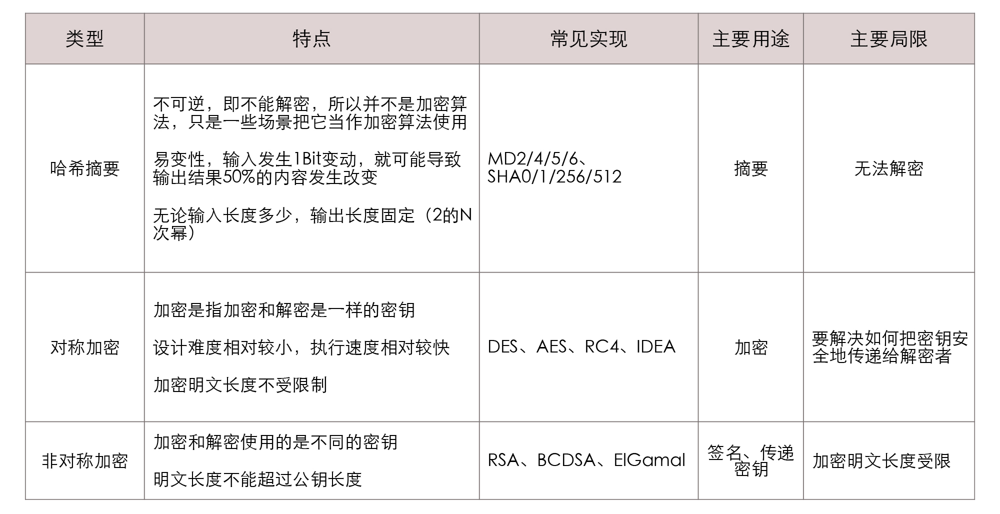

- 00 _导读 _ 什么是“The Fenix Project”？.md.html
- 00 开篇词 _ 如何构建一个可靠的分布式系统？.md.html
- 01 _ 原始分布式时代：Unix设计哲学下的服务探索.md.html
- 02 _ 单体系统时代：应用最广泛的架构风格.md.html
- 03 _ SOA时代：成功理论与失败实践.md.html
- 04 _ 微服务时代：SOA的革命者.md.html
- 05 _ 后微服务时代：跨越软件与硬件之间的界限.md.html
- 06 _ 无服务时代：“不分布式”云端系统的起点.md.html
- 07 _ 远程服务调用（上）：从本地方法到远程方法的桥梁.md.html
- 08 _ 远程服务调用（下）：如何选择适合自己的RPC框架？.md.html
- 09 _ RESTful服务（上）：从面向过程编程到面向资源编程.md.html
- 10 _ RESTful服务（下）：如何评价服务是否RESTful？.md.html
- 11 _ 本地事务如何实现原子性和持久性？.md.html
- 12 _ 本地事务如何实现隔离性？.md.html
- 13 _ 全局事务和共享事务是如何实现的？.md.html
- 14 _ 分布式事务之可靠消息队列.md.html
- 15 _ 分布式事务之TCC与SAGA.md.html
- 16 _ 域名解析系统，优化HTTP性能的第一步.md.html
- 17 _ 客户端缓存是如何帮助服务器分担流量的？.md.html
- 18 _ 传输链路，优化HTTP传输速度的小技巧.md.html
- 19 _ 如何利用内容分发网络来提高网络性能？.md.html
- 20 _ 常见的四层负载均衡的工作模式是怎样的？.md.html
- 21 _ 服务端缓存的三种属性.md.html
- 22 _ 分布式缓存如何与本地缓存配合，提高系统性能？.md.html
- 23 _ 认证：系统如何正确分辨操作用户的真实身份？.md.html
- 24 _ 授权（上）：系统如何确保授权的过程可靠？.md.html
- 25 _ 授权（下）：系统如何确保授权的结果可控？.md.html
- 26 _ 凭证：系统如何保证与用户之间的承诺是准确完整且不可抵赖的？.md.html
- 27 _ 保密：系统如何保证敏感数据无法被内外部人员窃取滥用？.md.html
- 28 _ 传输（上）：传输安全的基础，摘要、加密与签名.md.html
- 29 _ 传输（下）：数字证书与传输安全层.md.html
- 30 _ 验证：系统如何确保提交给服务的数据是安全的？.md.html
- 31 _ 分布式共识（上）：想用好分布式框架，先学会Paxos算法吧.md.html
- 32 _ 分布式共识（下）：Multi Paxos、Raft与Gossip，分布式领域的基石.md.html
- 33 _ 服务发现如何做到持续维护服务地址在动态运维中的时效性？.md.html
- 34 _ 路由凭什么作为微服务网关的基础职能？.md.html
- 35 _ 如何在客户端实现服务的负载均衡？.md.html
- 36 _ 面对程序故障，我们该做些什么？.md.html
- 37 _ 要实现某种容错策略，我们该怎么做？.md.html
- 38 _ 限流的目标与模式.md.html
- 39 _ 如何构建零信任网络安全？.md.html
- 40 _ 如何实现零信任网络下安全的服务访问？.md.html
- 41 _ 分布式架构中的可观测到底说的是什么？.md.html
- 42 _ 分析日志真的没那么简单.md.html
- 43 _ 一个完整的分布式追踪系统是什么样子的？.md.html
- 44 _ 聚合度量能给我们解决什么问题？.md.html
- 45 _ 模块导学：从微服务到云原生.md.html
- 46 _ 容器的崛起（上）：文件、访问、资源的隔离.md.html
- 47 _ 容器的崛起（下）：系统、应用、集群的封装.md.html
- 48 _ 以容器构建系统（上）：隔离与协作.md.html
- 49 _ 以容器构建系统（下）：韧性与弹性.md.html
- 50 _ 应用为中心的封装（上）：Kustomize与Helm.md.html
- 51 _ 应用为中心的封装（下）：Operator与OAM.md.html
- 52 _ Linux网络虚拟化（上）：信息是如何通过网络传输被另一个程序接收到的？.md.html
- 53 _ Linux网络虚拟化（下）：Docker所提供的容器通讯方案有哪些？.md.html
- 54 _ 容器网络与生态：与CNM竞争过后的CNI下的网络插件生态.md.html
- 55 _ 谈谈Kubernetes的存储设计理念.md.html
- 56 _ Kubernetes存储扩展架构：一个真实的存储系统如何接入或移除新存储设备？.md.html
- 57 _ Kubernetes存储生态系统：几种有代表性的CSI存储插件的实现.md.html
- 58 _ Kubernetes的资源模型与调度器设计.md.html
- 59 _ 透明通讯的涅槃（上）：通讯的成本.md.html
- 60 _ 透明通讯的涅槃（下）：控制平面与数据平面.md.html
- 61 _ 服务网格与生态：聊聊服务网格的两项标准规范.md.html
- 62 _ Fenix's Bookstore的前端工程.md.html
- 63 _ 基于Spring Boot的单体架构.md.html
- 64 _ 基于Spring Cloud的微服务架构.md.html
- 65 _ 基于Kubernetes的微服务架构.md.html
- 66 _ 基于Istio的服务网格架构.md.html
- 67 _ 基于云计算的无服务架构.md.html
- 春节特别放送（上）_ 有的放矢，事半功倍.md.html
- 春节特别放送（下）_ 积累沉淀，知行合一.md.html
- 用户故事 _ 詹应达：持续成长，不惧未来.md.html
- 结束语 _ 程序员之路.md.html
- 结课测试 _ 一套习题，测出你的掌握程度.md.html
- 捐赠
28 _ 传输（上）：传输安全的基础，摘要、加密与签名
你好，我是周志明。今天我们接着上节课的话题，一起来探讨下信息在传输时的保密问题。
其实在前面几讲中，我已经为传输安全层挖下了不少坑，比如说：
- 基于信道的认证是怎样实现的？
- 为什么说，HTTPS是绝大部分信息系统防御通讯被窃听和篡改的唯一可行手段？
- 传输安全层难道不也是一种自动化的加密吗？
- 为什么说客户端如何加密都不能代替HTTPS呢？
所以接下来，我会花两讲的时间，通过“假设链路上的安全得不到保障，攻击者要如何摧毁之前在认证、授权、凭证、保密中所提到的种种安全机制”这个场景，来给你讲解传输层安全所要解决的问题，同时这也能给你解答前面提到的这些问题。
另外，在上节课的开篇里我也提到过，安全架构中的传输环节是最复杂、最有效，但又是最早就有了标准解决方案的，它包含了许多今天在开发中经常听说，但却不为多数开发人员所知的细节，比如传输安全中的摘要、加密与签名，以及数字证书与传输安全层，等等。那么今天这一讲，我们就先来理清系统安全中，摘要、加密与签名这三种行为的异同之处。
哈希摘要的特点和作用
现在，让我们先从JWT令牌的一小段“题外话”，来引出这一讲要讨论的话题吧。
你应该已经知道，JWT令牌携带信息的可信度源于它是被签名过的信息，所以是不可篡改的，是令牌签发者真实意图的体现。然而，你是否了解过签名具体做了什么呢？为什么有签名就能够让负载中的信息变得不可篡改和不可抵赖呢？
要解释数字签名（Digital Signature）的话，就必须先从密码学算法的另外两种基础应用“摘要”和“加密”说起。
摘要也被叫做是数字摘要（Digital Digest）或数字指纹（Digital Fingerprint）。在JWT令牌中，默认的签名信息就是通过令牌头中指定的哈希算法（HMAC SHA256），针对令牌头、负载和密钥所计算出来的摘要值。
我们来看一个例子：
signature = SHA256(base64UrlEncode(header) + "." + base64UrlEncode(payload) , secret)
理想的哈希算法都具备这样两个特性：
一是易变性。这是指算法的输入端发生了任何一点细微变动，都会引发雪崩效应（Avalanche Effect），导致输出端的结果产生极大的变化。
这个特性经常被用来做校验，以此保护信息在传输的过程中不会被篡改。比如在互联网下载大文件，通常都会附有一个哈希校验码，用来确保下载下来的文件没有因网络或其他原因，与原文件产生任何偏差。
二是不可逆性。要知道，摘要的过程是单向的，我们不可能从摘要的结果中，逆向还原出输入值来。
其实这点只要你具备初中数学知识就能想明白，世间的信息有无穷多种，而不管摘要结果的位数是32、128还是512 Bit，即使它再大也总归是个有限的数字，所以输入数据与输出的摘要结果必然不是一一对应的关系。
可以想想看，如果我把一部电影进行了摘要，形成256 Bit的哈希值，应该不会有人指望能从这个哈希值中还原出一部电影的。
实际上，现在我们偶尔还能听到MD5、SHA1或其他哈希算法被破解了的新闻，这里的“破解”并不是“解密”的意思，而是指找到了该算法的高效率碰撞方法，它能够在合理的时间内，生成一个摘要结果为指定内容的输入比特流，但它并不能代表这个碰撞产生的比特流就会是原来的输入源。
所以通过这两个特性，我们能发现，摘要的意义就是在源信息不泄露的前提下辨别其真伪。易变性保证了，从公开的特征上就可以甄别出摘要结果是否来自于源信息；而不可逆性保证了，从公开的特征并不会暴露出源信息。这跟我们今天用来做身份识别的指纹、面容和虹膜的生物特征是具有高度可比性的。
摘要与加密和签名的本质区别
另外，在一些场合中，摘要也会被借用来做加密（如上节课“保密”中介绍的慢哈希Bcrypt算法）和签名（如第26讲中提到JWT签名中的HMAC SHA256算法）。但从严格意义上看，摘要与这两者是有本质的区别的。
加密与摘要的本质区别就在于，摘要是不可逆的，而加密是可逆的，逆过程就是解密。
在经典密码学时代，加密的安全主要是依靠机密性来保证的，也就是依靠保护加密算法或算法的执行参数不被泄露，来保障信息的安全。
而现代密码学并不依靠机密性，加解密算法都是完全公开的，信息的安全是建立在特定问题的计算复杂度之上。具体来说，就是算法根据输入端计算输出结果，这里耗费的算力资源很小；但根据输出端的结果反过来推算原本的输入，耗费的算力就极其庞大。
一个经常被用来说明计算复杂度的例子，就是大数的质因数分解，我们可以轻而易举地（以O(nlogn)的复杂度）计算出两个大素数的乘积：
97667323933 * 128764321253 = 12576066674829627448049
我们知道，根据算术基本定理，质因数的分解形式是唯一的，而且示例前面的计算条件中，给出的运算因子已经是质数了，所以12,576,066,674,829,627,448,049的分解形式，就只有一种，即上面给出的唯一答案。
然而，如何对大数进行质因数分解，其实到今天都还没有找到多项式时间的算法，甚至我们都无法确切地知道，这个问题属于哪个复杂度类（Complexity Class）。
所以说，尽管这个加密过程理论上一定是可逆的，但实际上的算力差异决定了其逆过程根本无法实现。
注：24位十进制数的因数分解完全在现代计算机的暴力处理能力范围内，这里只是举例。但目前很多计算机科学家都相信，大数分解问题就是一种P!=NP的证例，尽管也并没有人能证明它一定不存在多项式时间的解法。除了质因数分解外，离散对数和椭圆曲线也是具备实用性的复杂问题。
那既然我们提到了密码学，下面我们就来了解下密码学中最重要的应用，信息加密算法，一起来学习、理解下加密是如何保护信息不被泄露的。
加密算法的两大类型：对称与非对称
在现代密码学算法中，根据加密与解密是否采用了同一个密钥，将算法分为了对称加密和非对称加密两大类型。这两类算法各有明确的优劣势与应用场景。
首先我们来看看对称加密算法。
对称加密的缺点显而易见：因为加密和解密都使用相同的密钥，那么当通讯的成员数量增加时，为了保证两两通讯都能采用独立的密钥，密钥数量就要与成员数量的平方成正比，这必然就会面临密钥管理的难题。
而更尴尬的难题是，当通讯双方原本就不存在安全的信道时，如何才能把一个只能让通讯双方才能知道的密钥传输给对方？而如果有通道可以安全地传输密钥，那为何不使用现有的通道传输信息呢？这个“蛋鸡悖论”曾经在很长的时间里，严重阻碍了密码学在真实世界中的推广应用。
因此，在1970年代中后期出现的非对称加密算法，就从根本上解决了密钥分发的难题。
非对称加密算法把密钥分成了公钥和私钥，公钥可以完全公开，无需安全传输的保证。私钥由用户自行保管，不参与任何通讯传输。这两个密钥谁加密、谁解密，就构成了两种不同的用途：
- 公钥加密，私钥解密，这种就是加密，用于向私钥所有者发送信息，这个信息可能被他人篡改，但是无法被他人得知。举个例子，如果甲想给乙发一个安全保密的数据，那么应该甲乙各自有一个私钥，甲先用乙的公钥加密这段数据，再用自己的私钥加密这段加密后的数据，最后再发给乙。这样确保了内容既不会被读取，也不能被篡改。
- 私钥加密，公钥解密，这种就是签名，用于让所有公钥所有者验证私钥所有者的身份，并能用来防止私钥所有者发布的内容被篡改。但是它不用来保证内容不被他人获得。
这两种用途理论上肯定是成立的，但在现实中一般却不成立，因为单靠非对称加密算法，既做不了加密也做不了签名。原因是，不管加密还是解密，非对称加密算法的计算复杂度都相当高，性能比对称加密要差上好几个数量级（不是好几倍）。
要知道，加解密的性能不仅影响运行速度，还导致了现行的非对称加密算法都没有支持分组加密模式。分组的意思就是，由于明文长度与密钥长度在安全上具有相关性，通俗地说就是多长的密钥决定了它能加密多长的明文，如果明文太短就需要进行填充，太长就需要进行分组。
这也就是说，因为非对称加密本身的效率所限，难以支持分组，所以主流的非对称加密算法都只能加密不超过密钥长度的数据，这就决定了非对称加密不能直接用于大量数据的加密。
所以在加密方面，现在一般会结合对称与非对称加密的优点，通过混合加密来保护信道传输的安全。具体是怎么做的呢？
通常我们的做法是，用非对称加密来安全地传递少量数据给通讯的另一方，然后再以这些数据为密钥，采用对称加密来安全高效地大量加密传输数据。这种由多种加密算法组合的应用形式，就被称为“密码学套件”，非对称加密在这个场景中发挥的作用被称为“密钥协商”。
然后，在签名方面，现在一般会结合摘要与非对称加密的优点，通过对摘要结果做加密的形式来保证签名的适用性。由于对任何长度的输入源做摘要之后，都能得到固定长度的结果，所以只要对摘要的结果进行签名，就相当于对整个输入源进行了背书，这样就能保证一旦内容遭到了篡改，摘要结果就会变化，签名也就马上失效了。
这里，我也汇总了前面提到的这三种与密码学相关的应用，你可以参考下表格，去深入理解它们的主要特征、用途和局限性：

那么现在，让我们再回到开篇中提到的关于JWT令牌的几个问题上来：有了哈希摘要、对称和非对称加密，JWT令牌的签名就能保证负载中的信息不可篡改、不可抵赖吗？
其实还是不行的，在这个场景里，数字签名的安全性仍然存在一个致命的漏洞：公钥虽然是公开的，但在网络世界里，“公开”具体是一种什么操作？如何保证每一个获取公钥的服务，拿到的公钥就是授权服务器所希望它拿到的？
在网络传输是不可信任的前提下，公钥在网络传输的过程中可能已经被篡改了，所以如果获取公钥的网络请求被攻击者截获并篡改，返回了攻击者自己的公钥，那以后攻击者就可以用自己的私钥来签名，让资源服务器无条件信任它的所有行为了。
也就是说，如果是在现实世界中公开公钥，我们可以通过打电话、发邮件、发短信、登报纸、同时发布在多个网站上等多种网络通讯之外的途径来达成。但在程序与网络的世界中，就必须找到一种可信任的公开方法，而且这种方法不能依赖加密来实现，否则又会陷入到蛋鸡的问题之中。
小结
今天，我们从哈希摘要、对称加密和非对称加密这三种安全架构中常见的保密操作说起，一起学习了摘要、加密、签名这三种现代密码学算法基础应用的主要用途和区别差异。
首先我们要明确的是，哈希是不可逆的，它不能解密，并不是加密算法，只是一些场景把它当作加密算法使用。哈希的特点是易变性，输入发生1Bit变动，就可能导致输出结果50%的内容发生改变；无论输入长度多少，都有长度固定的输出（2的N次幂）。所以这些特点决定了哈希的主要应用是做摘要，用来保证原文未被修改。
而加密是现代密码学算法的关键应用，对称加密的设计难度比较小，执行速度快，加密明文长度不受限制，这些特点就决定了对于大量数据的加密传输，目前都是靠对称加密来完成的。但是对称加密难以解决如何把密钥传递给对方的问题，因而出现了非对称加密，它的特点是加密和解密使用的是不同的密钥，但是性能和加密明文的长度都受限。
一课一思
请你思考一下本节课最后提出的这个问题，即数字签名需要分发公钥，但在网络世界里，“公开”具体是一种什么操作呢？如何保证每一个获取公钥的服务，拿到的公钥就是授权服务器所希望它拿到的？欢迎给我留言。这个问题的答案呢，我们也会在下一节课中进行探讨。
好，感谢你的阅读，如果觉得有收获，也欢迎你把今天的内容分享给更多的朋友。就到这里，我们下一讲再见。
© 2019 - 2023 Liangliang Lee. Powered by gin and hexo-theme-book.